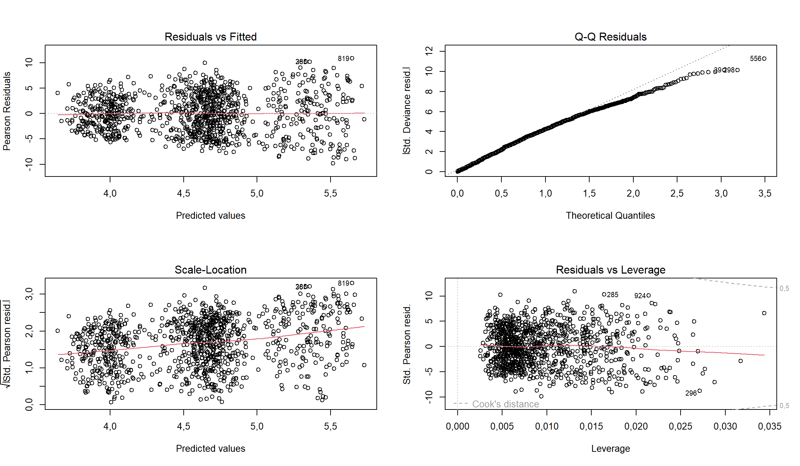
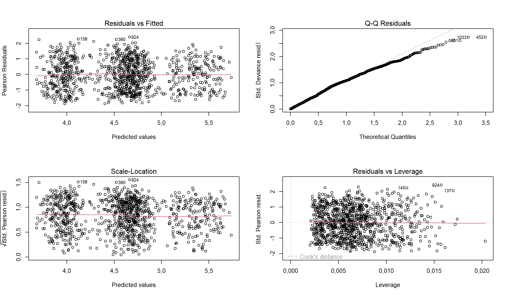
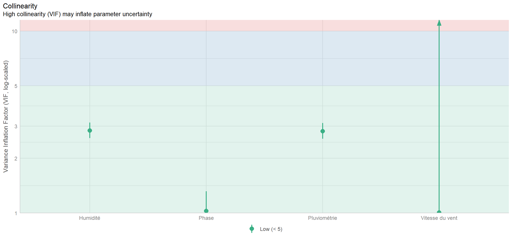

library(dplyr)
library(ggplot2)
library(plotly)
library(tidyverse)
library(gtsummary)
library(ggplot2)
library(reshape2)
library(MASS)
library(car)Modélisation des données de comptage
Description du jeu de données
Le monde actuel est confronté à de multiples risques sanitaires, notamment ceux liés aux maladies vectorielles telles que le paludisme. En effet, le paludisme est la maladie la plus mortelle transmise par les moustiques dans le monde ((OMS) 2023). Selon l’OMS, plusieurs millions de personnes ont été infectées par le paludisme en 2022 (environ 249 millions), entraînant près de 608 000 décès(Mondiale de la Santé) 2023).
Plusieurs actions ont été menées pour lutter contre ce fléau, notamment la distribution de moustiquaires, les campagnes de sensibilisation à l’hygiène, la chimioprévention saisonnière, ainsi que le traitement intermittent pour les femmes enceintes.
Djamaland a été choisi comme pays pour la mise en oeuvre d’une intervention progressive, principalement en raison de sa forte incidence du paludisme. L’intervention comprend quatre phases et couvre l’ensemble des régions du pays.
Voici la description de chaque phase :
Phase 1 : Aucun village n’a reçu d’intervention.
Phase 2 : Les quatre régions ont bénéficié de la distribution de moustiquaires.
Phase 3 : En plus de la distribution de moustiquaires, des actions de sensibilisation sur les bonnes pratiques d’utilisation ont été mises en place.
Phase 3 suite : En complément de la distribution et de la sensibilisation, un programme de partage des techniques de bonne hygiène a été intégré.
La base contenait également des informations sur les facteurs environnementaux (pression atmosphérique, vitesse du vent, indice UV, humidité relative).
Le but de cette étude est donc d’évaluer l’impact de l’intervention durant ces différentes phases.
Information sur les variables
On affiche ici les informations sur les variables de la base de données. On voit qu’il y’a 19 colonnes (variables) et 1040 lignes (observations).
data %>%
glimpse()Rows: 1.040
Columns: 19
$ Semaine <int> 1, 2, 3, 4, 5, 6, 7, 8, 9, 10, 11, 12, 13, 14…
$ Région <fct> R1, R1, R1, R1, R1, R1, R1, R1, R1, R1, R1, R…
$ Saison <chr> "Seche", "Seche", "Seche", "Seche", "Seche", …
$ Phase <fct> 0, 0, 0, 0, 0, 0, 0, 0, 0, 0, 0, 0, 0, 0, 0, …
$ `Taux de couverture` <dbl> 0,1575155, 0,2576610, 0,1817954, 0,2766035, 0…
$ Température <dbl> 25,52402, 31,06084, 28,69764, 28,11317, 30,57…
$ Humidité <dbl> 43,75700, 44,61046, 51,25039, 49,40113, 48,49…
$ Pluviométrie <dbl> 16,0111516, 8,2997481, 44,7344354, 38,9232328…
$ `Vitesse du vent` <dbl> 6,239284, 7,855973, 3,604419, 6,324740, 2,649…
$ `Pression atmosphérique` <dbl> 1015,6362, 1008,8631, 1008,3488, 1022,2085, 1…
$ `Indice de chaleur` <dbl> 19,83300, 25,96362, 23,67617, 22,94634, 25,61…
$ `Couverture nuageuse` <dbl> 82,280557, 57,209495, 32,469455, 14,619983, 1…
$ `Vent en hauteur` <dbl> 14,668663, 8,698154, 11,789413, 14,660355, 11…
$ `Indice UV` <dbl> 7,03602105, 10,09389904, 0,64470344, 5,463245…
$ `Température de l'eau` <dbl> 33,22569, 28,26913, 28,00962, 29,71320, 28,66…
$ `Humidité à l’ombre` <dbl> 53,83643, 64,71406, 55,98915, 63,04538, 62,21…
$ Aérosols <dbl> 1,477347, 4,530642, 34,596087, 80,345317, 18,…
$ `Cas palustres` <dbl> 97, 62, 76, 66, 163, 67, 154, 168, 79, 58, 15…
$ Dates <date> 2021-01-08, 2021-01-15, 2021-01-22, 2021-01-…On affiche ensuite un résumé statistique des variables dans le but de reperer certaines anomalies s’il y en a. Mais dans ce cas, il y’en a pas car j’ai moi même généré les données et donc j’ai veillé à ce qu’il n y ait pas de valeurs manquantes.
library(dplyr)
data %>%
summary() Semaine Région Saison Phase Taux de couverture
Min. : 1,00 R1:260 Length:1040 0:516 Min. :0,1001
1st Qu.: 65,75 R2:260 Class :character 1:104 1st Qu.:0,2019
Median :130,50 R3:260 Mode :character 2:208 Median :0,4023
Mean :130,50 R4:260 3:212 Mean :0,4301
3rd Qu.:195,25 3rd Qu.:0,6584
Max. :260,00 Max. :0,8998
Température Humidité Pluviométrie Vitesse du vent
Min. :13,64 Min. :35,41 Min. : 0,04131 Min. :2,001
1st Qu.:23,97 1st Qu.:48,81 1st Qu.: 21,90016 1st Qu.:3,975
Median :27,09 Median :54,81 Median : 41,11740 Median :5,975
Mean :27,08 Mean :61,99 Mean : 64,46301 Mean :5,913
3rd Qu.:30,21 3rd Qu.:78,54 3rd Qu.:106,59262 3rd Qu.:7,826
Max. :40,19 Max. :95,11 Max. :199,59270 Max. :9,998
Pression atmosphérique Indice de chaleur Couverture nuageuse Vent en hauteur
Min. : 980,4 Min. : 8,405 Min. : 0,0502 Min. : 5,007
1st Qu.:1006,5 1st Qu.:19,530 1st Qu.:25,7869 1st Qu.: 7,288
Median :1012,9 Median :22,434 Median :50,2530 Median : 9,831
Mean :1012,9 Mean :22,400 Mean :50,5150 Mean : 9,916
3rd Qu.:1019,5 3rd Qu.:25,580 3rd Qu.:76,9193 3rd Qu.:12,654
Max. :1041,6 Max. :36,178 Max. :99,9899 Max. :14,995
Indice UV Température de l'eau Humidité à l’ombre Aérosols
Min. : 0,001759 Min. :20,80 Min. : 42,66 Min. : 0,00251
1st Qu.: 3,201972 1st Qu.:26,32 1st Qu.: 58,98 1st Qu.:23,49266
Median : 5,851642 Median :28,40 Median : 64,76 Median :47,47861
Mean : 6,034127 Mean :28,40 Mean : 72,04 Mean :48,53851
3rd Qu.: 9,109514 3rd Qu.:30,54 3rd Qu.: 88,35 3rd Qu.:73,70956
Max. :11,971607 Max. :37,70 Max. :104,38 Max. :99,89207
Cas palustres Dates
Min. : 13,0 Min. :2021-01-08
1st Qu.: 58,0 1st Qu.:2022-04-06
Median : 93,0 Median :2023-07-03
Mean :111,2 Mean :2023-07-03
3rd Qu.:145,2 3rd Qu.:2024-09-28
Max. :466,0 Max. :2025-12-26 Pour cette étude, la variable d’intérêt est le nombre de nouveaux cas de paludisme enregistrés chaque semaine (t), avec des valeurs variant de 1 à 260 dans les quatre régions du pays.
Description du nombre de cas pour chaque région
p1 <- ggplot(data, aes(x = Dates, y = `Cas palustres`, color = Région)) +
geom_line() +
facet_wrap(~Région, scales = "free_y") +
labs(title = "", x = "Année", y = "Nombre de cas") +
geom_vline(xintercept = as.numeric(as.Date("2023-06-30")),
linetype = "dashed", color = "darkred", size = 0.5) +
geom_vline(xintercept = as.numeric(as.Date("2023-12-29")),
linetype = "dashed", color = "darkblue", size = 0.5) +
geom_vline(xintercept = as.numeric(as.Date("2024-12-24")),
linetype = "dashed", color = "royalblue", size = 0.5) +
theme_light() +
scale_x_date(date_breaks = "12 months", date_labels = "%b %Y") +
theme(axis.text.x = element_text(angle = 45, hjust = 1))
p_interactif1 <- ggplotly(p1)
p_interactif1Figure 1 : Evolution du nombre de cas de paludisme entre 2021 et 2025
La courbe des séries temporelles des cas de paludisme de 2021 à 2025 pour les quatre régions de l’étude montre une tendance générale à la baisse, particulièrement marquée après la mise en place des interventions. L’interpretation reste quasi pareille pour toute les regions.
Le test de Mann-Kendall confirme statistiquement cette tendance décroissante significative (p-value < 0.05), avec une diminution notable observée dans chaque région dès l’implémentation de la première phase du projet (figure @ref{fig:evolution}).
Par ailleurs, le test de Kruskal-Wallis appliqué aux différentes phases du projet révèle une différence significative entre le nombre de cas observés avant et après les interventions (p-value < 0.05), suggérant un impact positif des mesures mises en place.
Enfin, le pic épidémique le plus élevé a été observé en 2021 dans les régions 1, 3 et 4, avec respectivement 392, 396 et 466 cas de paludisme enregistrés aux mois de septembre et octobre. Pour la région 2, le pic a été atteint en 2022, avec 384 cas observés (figure @ref{fig:evolution}).
Modélisation
Analyse de la corrélation entre les variables météorologiques
L’analyse de la corrélation entre les variables montre des liens de corrélation relativement faibles. De plus, le calcul de l’indice de KMO, permettant de vérifier l’adéquation des données à l’analyse en composantes principales, a montré une valeur de 0,5, confirmant le faible niveau de corrélation entre les covariables et ne justifiant ainsi pas la réalisation d’une ACP.
data_meteo <- data[ , c(6:10 , 13)]
##-- Calcul de la matrice de corrélation
cor_matrix <- cor(data_meteo, use = "complete.obs")
##-- Transformation de la matrice de corrélation en format long pour ggplot2
cor_melted <- melt(cor_matrix)
cor_melted$value <- round(cor_melted$value , 2)
colnames(cor_melted)[3] <- "Coefficient de corrélation"
##-- Création de la heatmap
cor_plot <- ggplot(cor_melted, aes(x = Var1, y = Var2, fill = `Coefficient de corrélation`)) +
geom_tile() +
scale_fill_gradient2(low = "blue", mid = "white", high = "red", midpoint = 0) +
##-- Bleu pour négatif, rouge pour positif
theme_light() +
labs(x = "Variables",
y = "Variables") +
theme(
axis.text.x = element_text(angle = 90, hjust = 1, size = 10, face = "bold"),
axis.text.y = element_text(size = 10, face = "bold"),
axis.title.x = element_text(size = 10, face = "bold"),
axis.title.y = element_text(size = 10, face = "bold")
)
ggplotly(cor_plot)Figure 2 : Heatmap des Corrélations entre Variables Météorologiques
library(psych)
data_meteo <- data[, 6:17]
KMO(data_meteo)Error in solve.default(r) :
system is computationally singular: reciprocal condition number = 2.76177e-18Kaiser-Meyer-Olkin factor adequacy
Call: KMO(r = data_meteo)
Overall MSA = 0,5
MSA for each item =
Température Humidité Pluviométrie
0,5 0,5 0,5
Vitesse du vent Pression atmosphérique Indice de chaleur
0,5 0,5 0,5
Couverture nuageuse Vent en hauteur Indice UV
0,5 0,5 0,5
Température de l'eau Humidité à l’ombre Aérosols
0,5 0,5 0,5 Modélisation
model <- glm(`Cas palustres` ~ Température + `Taux de couverture` + Humidité + Pluviométrie + `Vitesse du vent` + `Pression atmosphérique` + Phase,
data = data, family = poisson())
#summary(model, exponentiate = TRUE)tbl_regression(model, exponentiate = TRUE) %>%
add_global_p() %>%
modify_header(label = "**Variables**") %>%
bold_labels() %>%
modify_caption(caption = capTab("Résultats de la régression de Poisson : Analyse des facteurs de risque"))| Variables | IRR | 95% CI | p-value |
|---|---|---|---|
| Température | 1,00 | 1,00, 1,00 | 0,002 |
| Taux de couverture | 1,13 | 1,07, 1,20 | <0,001 |
| Humidité | 1,01 | 1,01, 1,01 | <0,001 |
| Pluviométrie | 1,00 | 1,00, 1,00 | <0,001 |
| Vitesse du vent | 0,97 | 0,97, 0,98 | <0,001 |
| Pression atmosphérique | 1,00 | 1,00, 1,00 | <0,001 |
| Phase | <0,001 | ||
| 0 | — | — | |
| 1 | 0,41 | 0,39, 0,42 | |
| 2 | 0,45 | 0,43, 0,46 | |
| 3 | 0,49 | 0,47, 0,51 | |
| Abbreviations: CI = Confidence Interval, IRR = Incidence Rate Ratio | |||
Évaluation du modèle de Poisson
Ici le stepAIC permet de fournir une sélection de variables qui améliore le modèle (critère d’AIC que j’aborderai dans une autre publication). L’objectif est de minimiser l’AIC, donc nous devons conserver les variables dont la suppression entraîne une forte augmentation de l’AIC.
Décision de suppression des variables
La sélection des variables repose sur leur impact sur l’AIC (Akaike Information Criterion). Plus l’AIC augmente après suppression d’une variable, plus cette dernière est importante pour le modèle. Les variables sont classées en deux groupes : celles à conserver absolument et celles qui ont un impact modéré. La fonction stepAIC permet de faire automatiquement la sélection des variables importante dans le modèle.
mod1_poisson <- stepAIC(model) Start: AIC=22725,07
`Cas palustres` ~ Température + `Taux de couverture` + Humidité +
Pluviométrie + `Vitesse du vent` + `Pression atmosphérique` +
Phase
Df Deviance AIC
<none> 16104 22725
- Température 1 16114 22733
- `Taux de couverture` 1 16121 22740
- `Pression atmosphérique` 1 16132 22751
- `Vitesse du vent` 1 16525 23144
- Humidité 1 17231 23850
- Pluviométrie 1 18145 24763
- Phase 3 19109 25723A conserver absolument
Ces variables entraînent une forte augmentation de l’AIC si elles sont supprimées, ce qui indique qu’elles contribuent de manière significative à l’explication des cas palustres.
- Phase : +2998 d’AIC
- Pluviométrie : +2038 d’AIC
- Humidité : +1125 d’AIC
Variables modérément importantes
Ces variables ont un impact plus faible sur l’AIC et peuvent potentiellement être supprimées sans altérer significativement la qualité du modèle.
- Vitesse du vent : +419 d’AIC
- Pression atmosphérique : +26 d’AIC
- Taux de couverture : +15 d’AIC
- Température : +8 d’AIC
Décision
Les variables Phase, Pluviométrie et Humidité doivent impérativement être conservées, car leur suppression entraîne une augmentation très importante de l’AIC. En revanche, Vitesse du vent, Pression atmosphérique, Taux de couverture et Température ont un impact plus limité et peuvent être envisagées pour la suppression si nécessaire.
tbl_regression(model, exponentiate = TRUE) %>%
add_global_p() %>%
modify_header(label = "**Variables**") %>%
bold_labels() %>%
modify_caption(caption = capTab("Résultats de la régression de Poisson suite au stepAIC : Analyse des facteurs de risque"))| Variables | IRR | 95% CI | p-value |
|---|---|---|---|
| Température | 1,00 | 1,00, 1,00 | 0,002 |
| Taux de couverture | 1,13 | 1,07, 1,20 | <0,001 |
| Humidité | 1,01 | 1,01, 1,01 | <0,001 |
| Pluviométrie | 1,00 | 1,00, 1,00 | <0,001 |
| Vitesse du vent | 0,97 | 0,97, 0,98 | <0,001 |
| Pression atmosphérique | 1,00 | 1,00, 1,00 | <0,001 |
| Phase | <0,001 | ||
| 0 | — | — | |
| 1 | 0,41 | 0,39, 0,42 | |
| 2 | 0,45 | 0,43, 0,46 | |
| 3 | 0,49 | 0,47, 0,51 | |
| Abbreviations: CI = Confidence Interval, IRR = Incidence Rate Ratio | |||
par(mfrow = c(2,2))
plot(mod1_poisson)
L’analyse des diagnostics du modèle montre que les résidus de Pearson présentent une répartition aléatoire des points autour de zéro, suggérant l’absence de structure particulière dans les erreurs.
De plus, dans le graphique Q-Q, les points suivent approximativement la ligne diagonale, indiquant que les résidus sont normalement distribués, ce qui est un bon signe pour la validité des hypothèses du modèle.
La structure des erreurs standard de Pearson montre également une répartition équilibrée autour de la ligne rouge de référence, et un motif aléatoire est observé au niveau des écarts types de Pearson.
Tous ces éléments suggèrent une bonne adéquation du modèle aux données et confirment que les hypothèses sous-jacentes sont raisonnablement respectées.
Analyse de la surdispersion dans un modèle de Poisson
mod1_poisson %>%
performance::check_overdispersion()# Overdispersion test
dispersion ratio = 14.991
Pearson's Chi-Squared = 15441.190
p-value = < 0.001Ce resultat suggère qu’il y’a surdispersion dans les données (p-values < 0,05). Dans ce cas plusieurs alternatives sont possibles. Nous avons entre autres le modèle de regression binomiale négative qui est mélange de poisson-gamma et donc prend en compte un paramètre qui est celui de la dispersion. On a également le modèle quasi-poisson qui lui supprime la surdispersion présente dans les données à l’inverse du modèle binomial négatif qui l’estime.
Alternative : Le modele binomial negative
En alternative au modèle de Poisson en cas de surdispersion, le modèle binomial négatif a été mentionné (Cameron and Trivedi 2013). En effet, ce modèle intègre un paramètre supplémentaire qui permet de mieux capturer la variabilité excessive des données, offrant ainsi une estimation plus fiable et adaptée aux situations où la variance des observations est supérieure à la moyenne.
model_nb <- glm.nb(`Cas palustres` ~ Température + `Taux de couverture` + Humidité + Pluviométrie + `Vitesse du vent` + `Pression atmosphérique` + Phase,
data = data)
model_nb <- stepAIC(model_nb)Start: AIC=10479,97
`Cas palustres` ~ Température + `Taux de couverture` + Humidité +
Pluviométrie + `Vitesse du vent` + `Pression atmosphérique` +
Phase
Df AIC
- Température 1 10478
- `Pression atmosphérique` 1 10478
- `Taux de couverture` 1 10479
<none> 10480
- `Vitesse du vent` 1 10505
- Humidité 1 10544
- Pluviométrie 1 10568
- Phase 3 10662
Step: AIC=10478,09
`Cas palustres` ~ `Taux de couverture` + Humidité + Pluviométrie +
`Vitesse du vent` + `Pression atmosphérique` + Phase
Df AIC
- `Pression atmosphérique` 1 10476
- `Taux de couverture` 1 10477
<none> 10478
- `Vitesse du vent` 1 10503
- Humidité 1 10547
- Pluviométrie 1 10566
- Phase 3 10660
Step: AIC=10476,24
`Cas palustres` ~ `Taux de couverture` + Humidité + Pluviométrie +
`Vitesse du vent` + Phase
Df AIC
- `Taux de couverture` 1 10476
<none> 10476
- `Vitesse du vent` 1 10502
- Humidité 1 10545
- Pluviométrie 1 10564
- Phase 3 10658
Step: AIC=10475,49
`Cas palustres` ~ Humidité + Pluviométrie + `Vitesse du vent` +
Phase
Df AIC
<none> 10476
- `Vitesse du vent` 1 10501
- Humidité 1 10544
- Pluviométrie 1 10563
- Phase 3 11113tbl_regression(model_nb, exponentiate = TRUE) %>%
add_global_p() %>%
modify_header(label = "**Variables**") %>%
bold_labels() %>%
modify_caption(caption = capTab("Résultats de la régression de Binomial négative : Analyse des facteurs de risque"))| Variables | IRR | 95% CI | p-value |
|---|---|---|---|
| Humidité | 1,01 | 1,01, 1,01 | <0,001 |
| Pluviométrie | 1,00 | 1,00, 1,00 | <0,001 |
| Vitesse du vent | 0,97 | 0,96, 0,98 | <0,001 |
| Phase | <0,001 | ||
| 0 | — | — | |
| 1 | 0,44 | 0,40, 0,47 | |
| 2 | 0,47 | 0,45, 0,51 | |
| 3 | 0,51 | 0,48, 0,55 | |
| Abbreviations: CI = Confidence Interval, IRR = Incidence Rate Ratio | |||
Interpretation des résultats
Intervalles de confiances des variables météorologiques
Les intervalles de confiance des variables météorologiques sont aussi petits car les données ont été générées. Et donc du coup avec de vraies données, il est possible de se retrouver avec des intervalles de confiance qui pourraient ne pas ressembler à ceux-ci.
L’humidité augmente le nombre de cas de paludisme de 1% tandis que la vitesse de vent diminue le nombre de cas de paludisme de 3% (IC =[2% ; 4%]) toute chose étant égale par ailleur (l’influence des autres variables étant retirée).
La première phase d’interventions a permis de reduire le nombre de cas de paludisme de 56% (IC = [53% ; 60%]) par rapport à la phase 0 pendant laquelle il n’y avait pas encore d’intervention toute chose etant égale par ailleurs.
La seconde phase d’interventions a permis de reduire le nombre de cas de paludisme de 53% (IC = [49% ; 55%]) par rapport à la phase 0 pendant laquelle il n’y avait pas encore d’intervention toute chose etant égale par ailleurs.
La troisième phase d’interventions a permis de reduire le nombre de cas de paludisme de 49% (IC = [45% ; 52%]) par rapport à la phase 0 pendant laquelle il n’y avait pas encore d’intervention toute chose etant égale par ailleurs.
Annexes
Diagnostic du modèle binomial négatif
Analyse des résidus
par(mfrow = c(2,2))
plot(model_nb)
Multicolinéarité du modèle binomial négatif
plot(performance::check_collinearity(model_nb))
On remarque que toutes les variables ont un faible VIF < 5. Cela suggère qu’il n’y a pas de multicolinéarité entre les variables utilisées dans le modèle.
Test de Mann-Kendall
Ce test a été utilisé avec les alternatives unilatérales droite et gauche pour tester la présence de tendances strictement croissantes ou strictement décroissantes de la serie nombre de cas hebdomadire de paludisme dans chaque région d’etudes.
Hypothèses du test
\[ \begin{cases} H_0 : \text{La série ne présente pas de tendance monotone (croissante ou décroissante).} \\ H_1 : \text{La série présente une tendance monotone (croissante ou décroissante).} \end{cases} \] Interprétation
Si la p-value est inférieure au seuil de signification choisi (généralement 0,05),
alors il y a suffisamment de preuves pour conclure que la série (nombre de cas de paludismeou incidences cumulées durant une phase) présente une tendance monotone.
Dans le cas contraire, on conclut que la série ne présente aucune tendance significative.
Description du modèle de Poisson
Soit (\(Y\)) le nombre de cas de paludisme hebdomadire Il s’agit d’une variable quantitative discrète prenant ses valeurs dans un intervalle défini. Supposons en outre que ces événements sont indépendants, c’est-à-dire que l’occurrence d’un premier cas n’affecte pas la probabilité d’en observer un autre.
Dans ce contexte, la variable (\(Y\)) suit une distribution de Poisson, avec un paramètre () représentant le taux moyen d’apparition d’un cas de paludisme. La probabilité d’observer une valeur donnée de (\(Y\)), en fonction de (), est exprimée par la formule suivante :
\[ P(Y = y) = \frac{\lambda^y}{y!} e^{-\lambda} \]
La distribution de Poisson n’a qu’un paramètre: () correspond à la fois à sa moyenne et à sa variance.
\[E(\lambda) = V(\lambda)\] Le modèle de Poisson a été utilisé pour identifier les facteurs associés à la survenue du cas de paludisme, principalement en raison de la nature discrète de notre variable dépendante.
La régression de Poisson s’inscrit dans le cadre des modèles linéaires généralisés, où la variable réponse (\(Y\)) suit une distribution de Poisson :
\[ y \sim \text{Poisson}(\lambda) \]
Puisque () doit être un nombre positif, nous utiliserons la fonction de logarithme comme lien avec le prédicteur linéaire.
\[ \log{\lambda} = \eta = \beta_0 + \sum_{i = 1}^m \beta_i x_i \]
Estimation des parametres
L’estimation des paramètres d’un modèle de Poisson repose sur la méthode du maximum de vraisemblance (MV). Voici les étapes essentielles de l’estimation :
. Fonction de Vraisemblance
La fonction de vraisemblance pour (n) observations est donnée par :
\[L(\beta) = \prod_{i=1}^{n} \frac{\lambda_i^{y_i} e^{-\lambda_i}}{y_i!}\]
En prenant le logarithme, on obtient la log-vraisemblance :
\[\ell(\beta) = \sum_{i=1}^{n} \left[ y_i \log(\lambda_i) - \lambda_i - \log(y_i!) \right]\]
En remplaçant ( _i ) par ( e^{X_i } ), on obtient :
\[\ell(\beta) = \sum_{i=1}^{n} \left[ y_i (X_i \beta) - e^{X_i \beta} - \log(y_i!) \right]\]
Estimation par Maximum de Vraisemblance
L’estimation des paramètres ( ) se fait en maximisant la log-vraisemblance. Comme il n’existe pas de solution analytique simple, on utilise des méthodes numériques telles que l’algorithme de Newton-Raphson ou la descente de gradient.
Analyse de la presence de surdispersion dans les données
Tel que mentionné plus haut, l’indépendance des observations est un prérequis du modèle de Poisson. Sa non-vérification peut entraîner une surdispersion des données. Cette surdispersion est quantifiée par un paramètre ( ) qui multiplie la variance attendue : pour une moyenne ( ), la variance devient donc ( ).
Plus rarement, il peut arriver que ( < 1 ), ce qui correspond à une sous-dispersion des observations. Contrairement à la surdispersion, où les observations ont tendance à être regroupées, la sous-dispersion traduit une répartition plus régulière que prévu.
Afin de s’assurer de la pertinence du modèle choisi, une analyse de la surdispersion a été réalisée à l’aide du **test de surdispersion*. Les hypothèses du test étaient les suivantes :
Hypothèse nulle ((H_0)) : absence de surdispersion (le modèle de Poisson est approprié).
Hypothèse alternative ((H_1)) : présence de surdispersion (le modèle de Poisson n’est pas adapté).
Critère de décision : Une p-value inférieure à 0,05 conduit au rejet de ( H_0), indiquant la présence d’une surdispersion et la nécessité d’envisager un modèle alternatif (comme le quasi-Poisson ou le Poisson négatif).
Référence
Cameron, A. Colin, and Pravin K. Trivedi. 2013. Regression Analysis of Count Data. 2nd ed. Econometric Society Monographs. Cambridge: Cambridge University Press. https://doi.org/10.1017/CBO9781139013567.